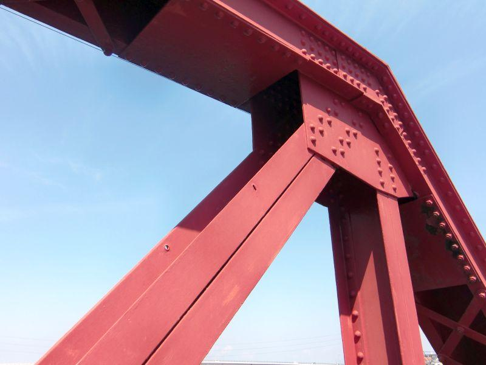

戦火をくぐり抜けて現存する、日本最古の跳ね橋 < 長浜大橋 / 愛媛県大洲市長浜町 >
長浜大橋(愛媛県大洲市長浜町)
戦前に架けられたこちらの橋は、日本最古の跳ね橋であり 現役で可動しているものとしても 唯一の存在。
戦争という激動は、傷痕として 橋にしっかりと刻まれています。
橋の各所に刻まれた機銃掃射痕
橋のたもと、石の親柱に刻まれた弾痕。
石に、コンクリートに、鋼材に。至る所に機銃掃射を受けた痕を見ることができる。
橋の反対側へ。
鋼材への機銃掃射痕は 左岸側の橋桁に集中しています。

硬い鋼材を、いとも簡単に打ち抜く破壊力

定期的に塗装保護作業が行われているのでしょうが、この傷痕は消えません。
この部分は 弾が鋼材の縁(ふち)に命中したのでしょうか。
反対側から見ても、しっかりそれがわかります。
水平に空いた穴
上空からの発射だけではなく、橋に対して 目線と同じ高さで撃ったこともわかります。
大胆と言うか、腕が良いと言うか。決して褒められたことではありませんが...
鋼材の角など 分厚いか硬い部分は貫通を果たせず、傷痕だけが残されています。
跳ね橋の操縦室近くにも この通り。
一通り見ていると、機銃掃射は 残された弾痕の大きさから、12.7mm砲だったことがわかります。
可動橋の機能停止に追い込むことはできても、橋を破壊するまでは荷が重い。
かと言って、米軍が 急降下爆撃やロケット弾等を用いて 本気で攻撃を試みていれば、橋は無くなっていたかもしれません。
橋の親柱付近に残された弾痕
川の右岸、橋のたもと両側に立つ石造りの親柱。
ここでは石材に刻まれた機銃掃射痕を見ることができる。

上部から下部まで、
内側にも外側にも 弾痕が残されています。
戦争の時代をくぐり抜けて現存する長浜大橋
戦時中、長浜大橋の道路上には 小規模ながら小屋が立ち並び、手工業が行われていました。
造られていたものは、下駄や草履など 日用品だったようですが、迷彩塗装が施されていたため 米軍は軍需工場と見なし、攻撃目標としてマークしていた様子。
開通してから83年が経過した長浜大橋。
日本の近代化を象徴する建造物として、戦争の爪痕を残す物件として。
今も現役で可動している 全国唯一の存在として。
・
・
・
長浜大橋は どの切り口から見ても、貴重な存在になっています。
関連記事
2018,11/14 終戦間際に発生した列車空襲事件 < 那賀川橋りょう / 徳島県阿南市 >
2018,11/20 日本最古の跳ね橋、国内で唯一 現役稼働中 < 長浜大橋 / 愛媛県大洲市長浜町 >
長浜大橋
< 自家用車 >
高松駅から 約2時間40分、190km
松山空港から 約1時間、39km
< 公共交通機関 >
伊予長浜駅下車 徒歩約15分、1.0km
※ 主な地点からの最速・最短距離